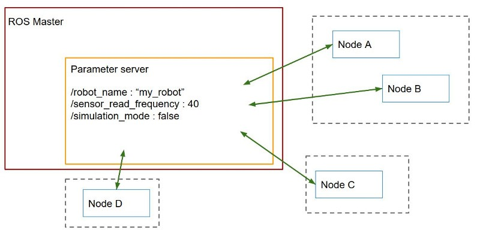
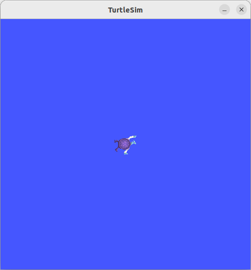
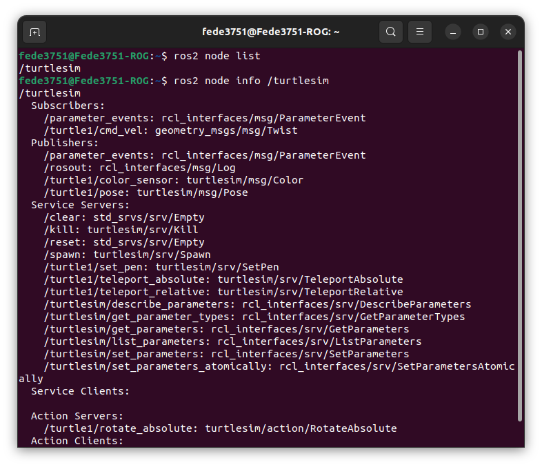
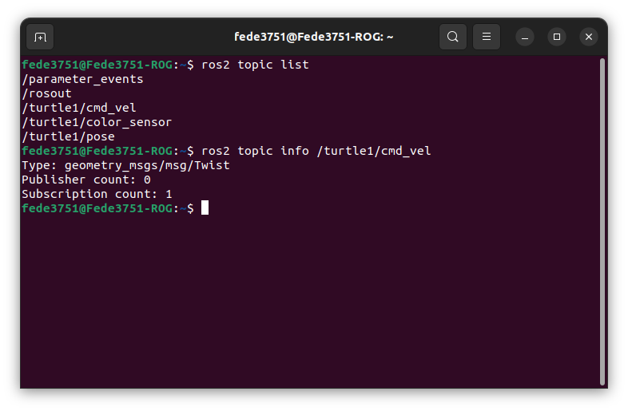
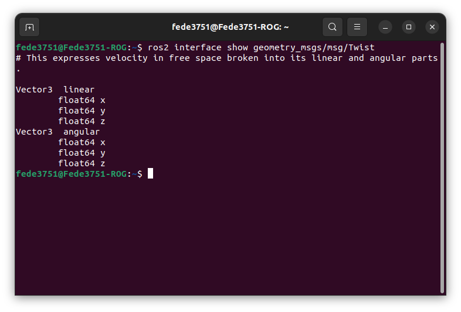
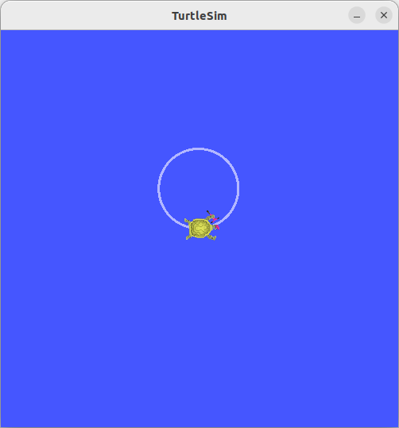
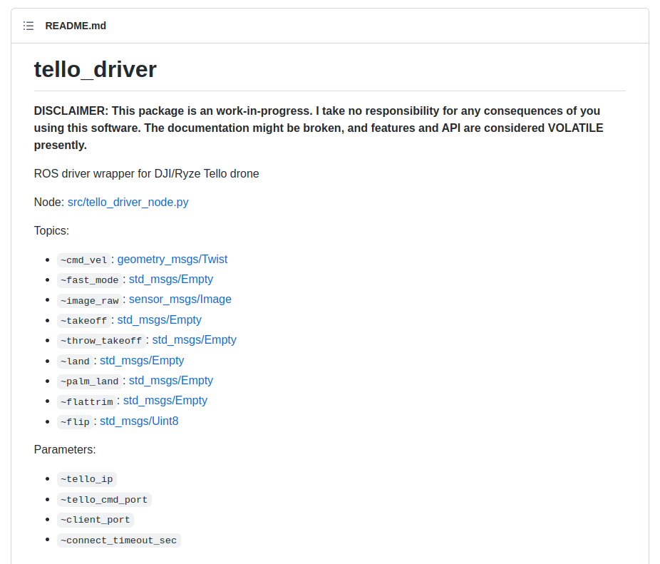

IoT Lab Lecture 1 - 15/03/2023
The Robot Operating System (ROS) is a set of software libraries and tools that help you build robot applications.
ROS offers a standard software platform to developers across industries that will carry them from research and prototyping all the way through to deployment and production.

Nodes

Topics


Services


Parameters

Actions

Seeing everything in Action - TurtleSim
In this second part, we will see every concept just discussed applied to an ad-hoc example given by ROS: TurtleSim.
It consists of a simple ROS project with nodes and topics ready to be used, useful to learn some concepts of the structure of a ROS project.
First, let's install the code for TurtleSim.
If you're using Ubuntu:
sudo apt update
sudo apt install ros-humble-turtlesim
sudo apt update
sudo apt install ~nros-humble-rqt*
With everything installed, we are ready to run our simulation.
First, let's source our ROS environment!
source /opt/ros/humble/setup.bash
On MacOS:. ~/ros2_install/ros2-osx/setup.bash
This command is required on every new console we will open that we want to use to run any ROS-related code. The reason why it is this way is so that multiple versions of ROS and projects which have conflicting dependencies can cohexist on the same machine.If you wish to avoid writing this code every time you open the console (as we will be using only one version of ROS for the rest of this course), you can add the aforementioned code at the end of your ~/.bashrc file. This will make the code run everytime a new console window is opened.
Now, we run our TurtleSim project.
To do so, just type:
ros2 run turtlesim turtlesim_node
This will start your turtlesim application! And you should have something that looks like this in a new window:  Without you knowing, spawning this simple node has already populated the ROS environment with multiple topics and services ready to be used.Let's familiarize briefly with some ROS commands which will come back useful at any given time during your development with ROS.
First of all, from the console we can see all the running ROS nodes by typing:
ros2 node list
HINT: rememeber that in this case, if you don't remember a given command, TAB is your best friend (I myself constatly forget some commands that I have to use), so when in doubt, always TAB two times and see what the auto-complete suggests you.We should see only /turtlesim running.
We can get further info of the turtlesim node by typing:
ros2 node info /turtlesim
And this should give you something like this:  Let's stop for a little bit of time here and try to make sense of what we are seeing.First of all, we have a list of Subscribers: this is a list of topic which turtlesim is subscribed to, this means that, if any other given node publishes a message to those topic, turtlesim will receive those messages.
Then we have a list of Publishers, this is a list of topics which turtlesim publishes data. Any external node can subscribe to those topics to get updates on the status of the application (i.e., /turtle1/pose for the current position of the turtle on the screen)
We then have a list of Services servers. This are all the services spawned by turtlesim, which can be used at any time by an external node. As we have stated before, services are a more "structured" way of accessing data of a node, and, instead of a stream of continuous data, always consist of a call by an external node, a particular behaviour from the receiving node, and a response after the service is executed.
Finally, we have a single action at the end, which can be called to be executed.
All the members displayed are reported with the type of message they take in input.
Let's give a more detailed look to a particular topic: /turtle1/cmd_vel.
First of all, we can see all the list of current topics in our ROS environment by typing:
ros2 topic list
Just like before for the nodes. Intuitivelly, you may have figured out that this command work for any ROS structure you want to list (i.e. action and service). It does.Now, if we want to publsh to this topic, how do we do that? Let's try to find out some more info about it.
Let's type:
ros2 topic info /turtle1/cmd_vel
(Always remember that TAB is your best friend)This should output something like this:  This tells us how many nodes are subscribed to the topic, how many node are publishing to it, and finally, what we really want to know right now: the type of message the topic accepts.
This was something already known from before when we displayed the node info of turtlesim, but may have went unnoticed for some.
We could have also found that out by adding the option -t to our list command, but we didn't.
If we want to publish something to /turtle1/cmd_vel, we will have to publish a message of the type geometry_msgs/msg/Twist. Which is a message of type Twist of the package geometry_msgs.
What is a Twist message precisely? Good question, let's find out!
Just write:
ros2 interface show geometry_msgs/msg/Twist
And this will give all the information that you need to send a message to our cmd_vel topic.  As we can see from the output, a Twist message is composed of two Vector3 values, called linear and angular.Now, let's try to send a Twist message to cmd_vel!
We can easily publish messages to a topic from the console by typing:
ros2 topic pub [topic_name] [msg_type] '[args]'
So, for this case, let's say that we want to move the turtle, we can write:ros2 topic pub --once /turtle1/cmd_vel geometry_msgs/msg/Twist "{linear: {x: 2.0, y: 0.0, z: 0.0}, angular: {x: 0.0, y: 0.0, z: 1.8}}"
Just remove the --once option, and you will have the turtle spinning in circle constantly.  If you want to play around with your turtle a little bit more (the turtle needs some love afterall), you can spawn a new node called turtle_teleop_key, which allows you to control the turtle by using your keyboard.Just write:
ros2 run turtlesim turtle_teleop_key
And have "fun" using the arrowkeys and the other keys to move the turtle around.turtle_teleop_key is no exception to the ROS paradigm, and it sends messages to turtle1/cmd_vel exactly like we just did, all that behaviour is just encapsulated into an ad-hoc publisher script. Which we will soon see how to write.
If you want to find out that for yourself, feel free to take a look at the github source here.
If you are scared of looking at c++ code, don't worry, ROS also support Python scripting, and we will use that for a simpler approach.
Was that boring? Probably.
The truth is that, moving a simulated and a physical drone which implements a ROS sdk is not so different from moving the turtle in our screen.
This is why ROS is truly a powerfull tool.
 This is the GitHub page of the ROS SDK for some Tello drones. Does it ring a bell?
We will get there, eventually!
Excercise 1 - Double turtles!
This excercise is to test what we have seen so far in this lecture.
You are requested to spawn two turtles in the same window.
One turtle should be moving clockwise. The other one anti-clockwise.
We have not seen how to call services, but they are really not that different from topics, the syntax for calling
a service is the following:
ros2 service call [service_name] [msg_interface] [msg]
With this new knowledge, you should be able to complete the task assigned.Try to solve it on your own, and when you have done, you can come back and look at the solution.
Good luck!
Did you make it?
The solution is kinda simple.
The first thing to do, is to call the service /spawn to spawn a second Turtle.
You can do that by typing:
ros2 service call /spawn turtlesim/srv/Spawn "{x: [x_coordinate], y: [y_coordinate], theta: [rotation]}"
This will spawn your second turtle on your screen, named turtle2 by default.Just list the topics again, and you should have your new /turtle2/cmd_vel topic.
This will be the topic we need to publish to, in order to move the second turtle.
At this point, there is nothing new to do.
Open two terminal windows and type, in each of them, the following commands:
ros2 topic pub /turtle1/cmd_vel geometry_msgs/msg/Twist "{linear: {x: 2.0, y: 0.0, z: 0.0}, angular: {x: 0.0, y: 0.0, z: 1.8}}"
For the first, and:ros2 topic pub /turtle1/cmd_vel geometry_msgs/msg/Twist "{linear: {x: 2.0, y: 0.0, z: 0.0}, angular: {x: 0.0, y: 0.0, z: -1.8}}"
in the second terminal!Good job!
Some have asked me how you can control the second turtle with the keyboard. All we need to do is start turtle_teleop_key and redirect the publishing topic to the second turtle, just like this:
ros2 run turtlesim turtle_teleop_key /turtle1/cmd_vel:=/turtle2/cmd_vel
The rqt Interface
Before moving to more complex matters, there are some tools which can come in handy in the future. If you want to see a list of services and topics in a graphical interface, of easier use, you can write:
rqt
And, by refreshing the application using the arrows on the top left, if your TurtleSim is still running, you should be able to see a list of topics and services that the TurtleSim application publishes.Feel free to play with some of the services (select one service, edit its parameters, and then clic call) to see how they change something in the running application.
Then, if you want to have a clearer view of your whole ROS workspace, you can run:
rqt_graph
to see all the nodes, topics, services and actions currently available, all in a graphical graph-based structure. Finally, if you want to see the list of logs of your ROS applicaton, you can run:
Finally, if you want to see the list of logs of your ROS applicaton, you can run:
ros2 run rqt_console rqt_console
This concludes (mostly) everything we have seen in the first lecture.
In the next one, we will pick up from where we left and reintroduce colcon from scratch!
If there are still some typos around I may have missed, feel free to email me and I will fix them ASAP.
See you soon!